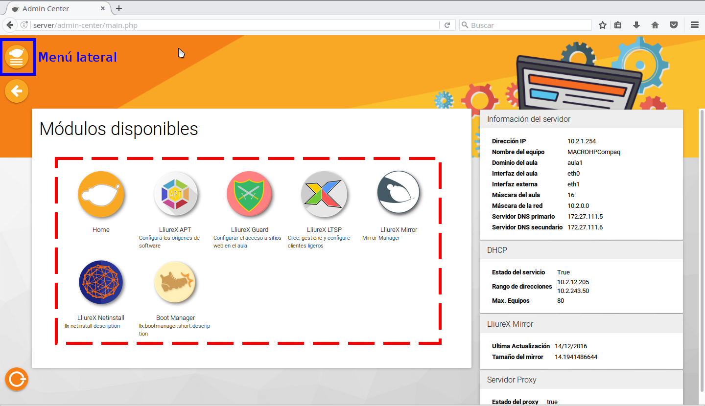
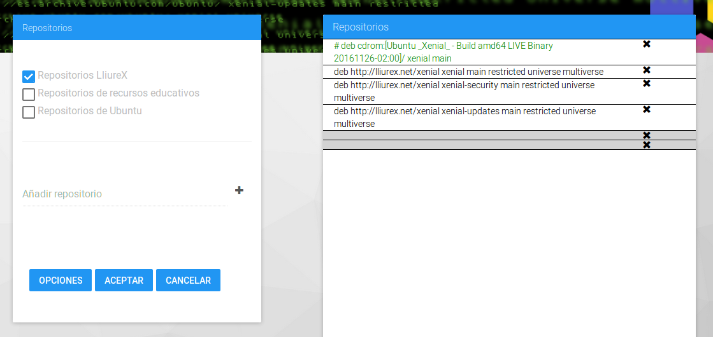
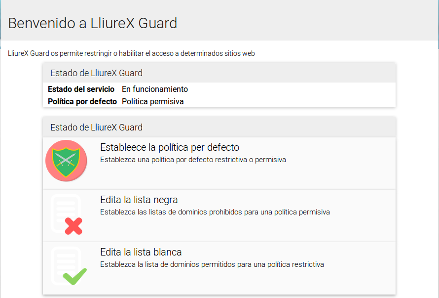
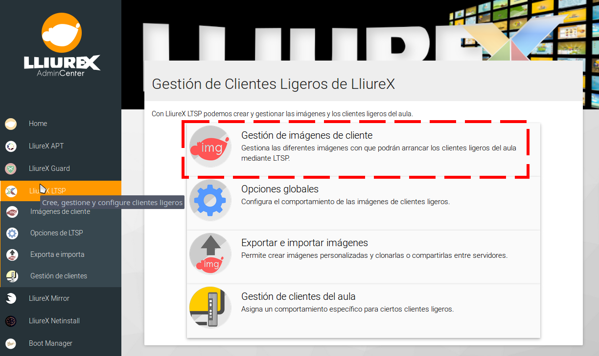

Centre d'administració
Tot el que vols fer a l'aula més fàcil i accessible.
- Lloc web: http://wiki.lliurex.net

Tauler d'administració
-
Tots els mòduls accessibles a un clic
Administra les funcions més importants del servidor. -
Consulta l'estat del servidor
A la dreta pots veure les variables més importants del servidor.
Selector de repositoris
-
Tria els repositoris
Si vols utilitzar repositoris externs ací t'ho posem fàcil. -
Elimina els que no utilitzes
Si ja no els necessites, esborra'ls en un clic.
Lliurex-Guard
-
Estableix la política per defecte
Vols permetre o denegar l'accés per defecte? -
Llista negra
Evitarà l'accés als dominis que consideres. -
Llista blanca
Permetrà l'accés als dominis que ací poses.
LliureX Mirror

-
Crea i actualitza la rèplica
Pots accedir-hi des de qualsevol equip. -
Comprova l'estat
Mira si està actualitzat i l'arquitectura.
Instal·lació d'equips per xarxa

-
Mostra l'opció al menú
Pots fer visible aquesta opció o amagar-la. -
Deixa'l instal·lant i oblida-te'n
Tens l'opció de deixar-lo instal·lant sense que et demane res. -
Enviament d'estadístiques
Ajuda'ns a saber quines aplicacions s'utilitzen més.
Boot Manager

-
Tria l'ordre d'arrancada
Tria quina imatge vols que arranque per defecte. -
Oculta/mostra les opcions
Tria quines opcions vols mostrar al menú d'arrancada.
Lliurex-LTSP
-
Gestió d'imatges
Crea, esborra, edita... -
Opcions globals
Modifica el comportament per defecte. -
Exporta/importa imatges
Fes-te'n una còpia de seguretat o porta-la a una altra aula. -
Modifica un client en concret
Si un equip et dóna faena, canvia'n algun paràmetre.